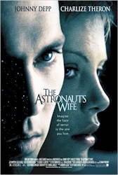

Contents | Features | Reviews | Books | Archives | Store |
 |
|
| Movie Credits | Buy It! |
The Astronaut's Wife
Review by
Gregory Avery
Posted 27 August 1999
|  |
Written
and Directed by Rand Ravich. Starring
Johnny Depp, |
In
The Astronaut's Wife, Charleze Theron plays a woman whose husband (Johnny
Depp) returns from a routine space mission where he mysteriously lost contact
with mission control for two whole minutes. He refuses to tell her what happened
to him during those two minutes. He also quits the space program, moves himself
and his wife to New York City, takes a new job, grows increasingly colder as a
person, and develops light blond streaks at the front of his hair which aren't
artificial. The wife notices a N.A.S.A. security agent (Joe Morton) is dogging
their steps. When he does finally tell his wife about what happened, up there,
it's as a prelude to the act of conception. The results are successful: the wife
finds out that she's expecting twins.
The
writer/director Rand Ravich shows style and a talent for creating a quiet,
sustained sense of eeriness, and there are some good performances by Theron
(who's very good, in fact), Depp (who creates a chilling characterization, even
though his role in the movie flattens-out during the second half), and Morton
(who's one of the best character actors we've got around, today). There's also
some excellent editing work (by Steve Mirkovich and Tim Alverson), and set
design (by Randall Wilkins): the apartment into which the main characters move
in New York is made up of many different levels, but has no definite rooms.
But Ravich needs to get better
material. As the film progresses, it turns out to be an outer-space rip-off of Rosemary's
Baby, where, there as here, the heroine, going through her first pregnancy,
gradually convinces herself that everyone is conspiring against her. Only, The
Astronaut's Wife lacks the nuance, double-level meanings, and dark reason
which made Ira Levin's tale so dramatically compelling. And Ravich concludes the
film with an ending that's so insipid that it wrecks everything that came before
it.
It does not end with Rosemary --
sorry -- Charleze Theron's character discovering her babies, alive and well, in
a little flying saucer-shaped bassinet in the next door apartment. But, then,
Roman Polanski, who directed the film version of Levin's novel, always had a way
of finding the humor in every situation. The Astronaut's Wife takes
itself very, very seriously, indeed.
Contents | Features | Reviews
| Books | Archives | Store
Copyright © 1999 by Nitrate Productions, Inc. All
Rights Reserved.